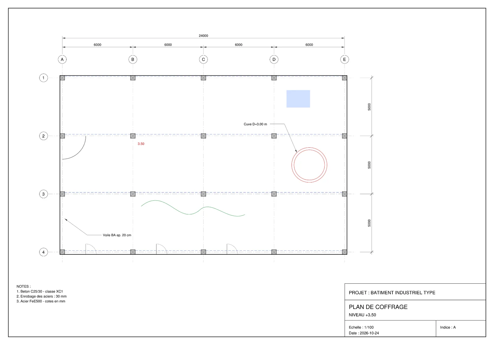
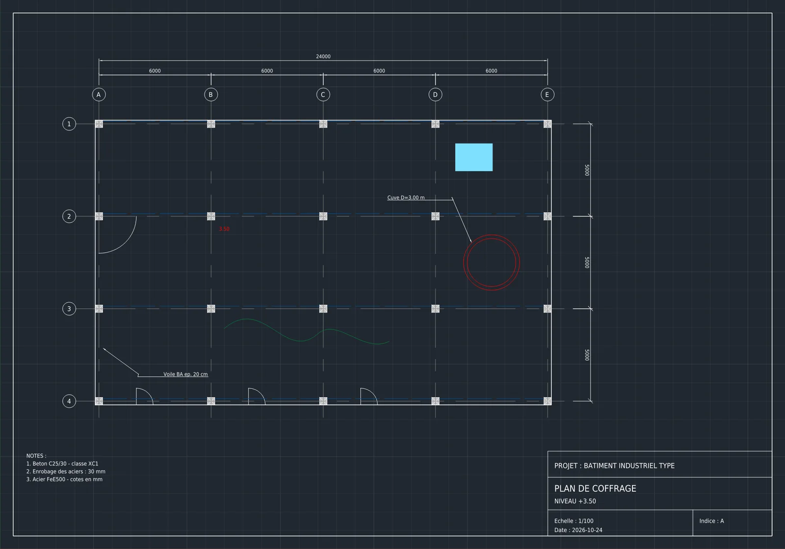
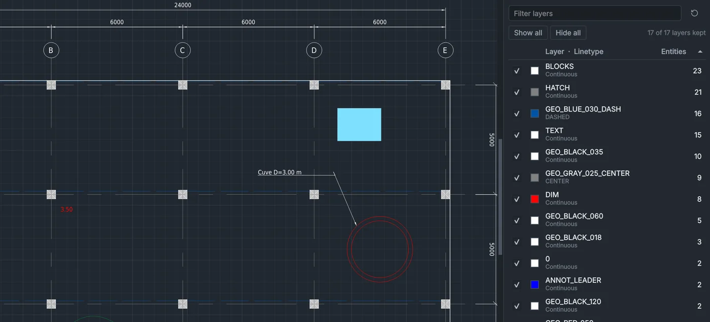
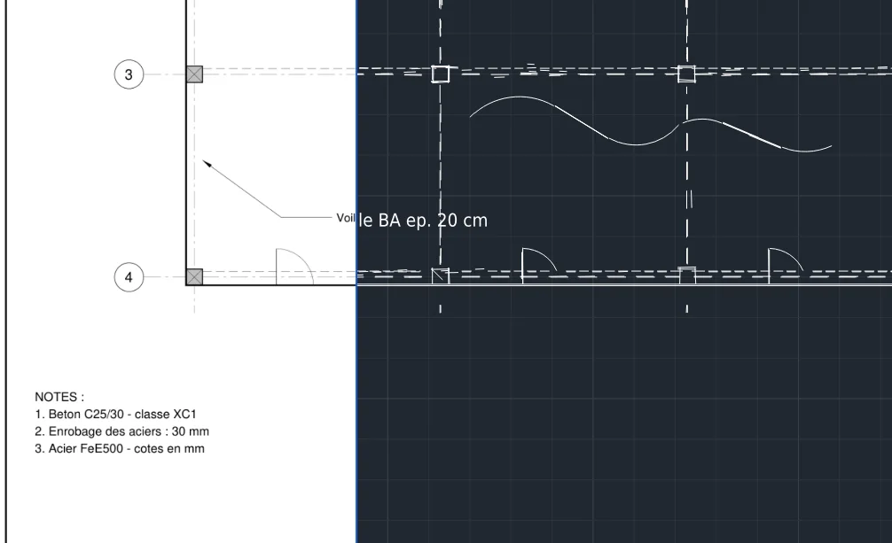
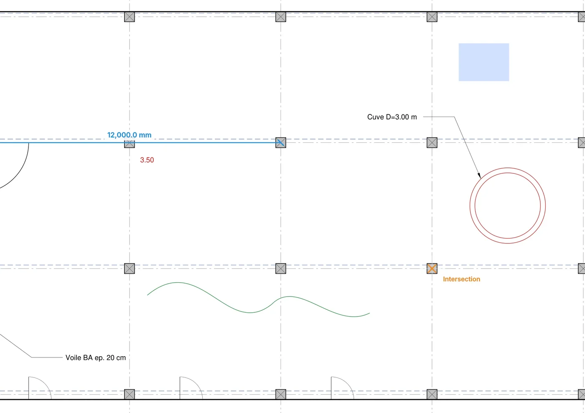
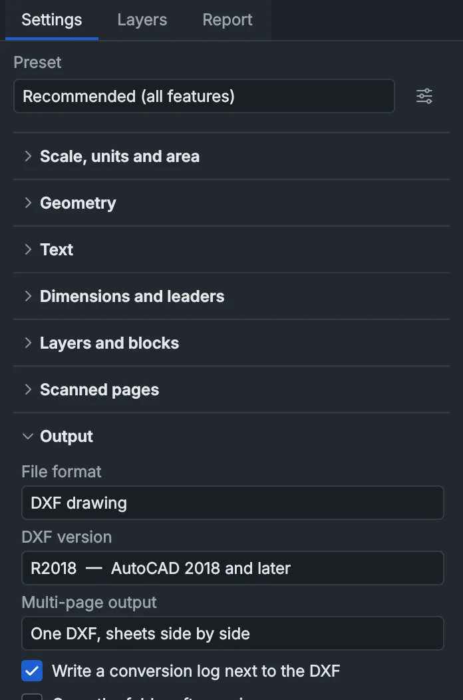
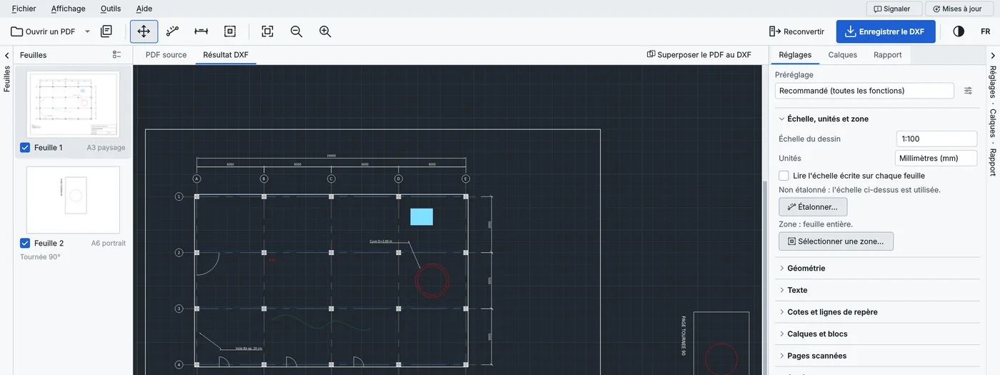
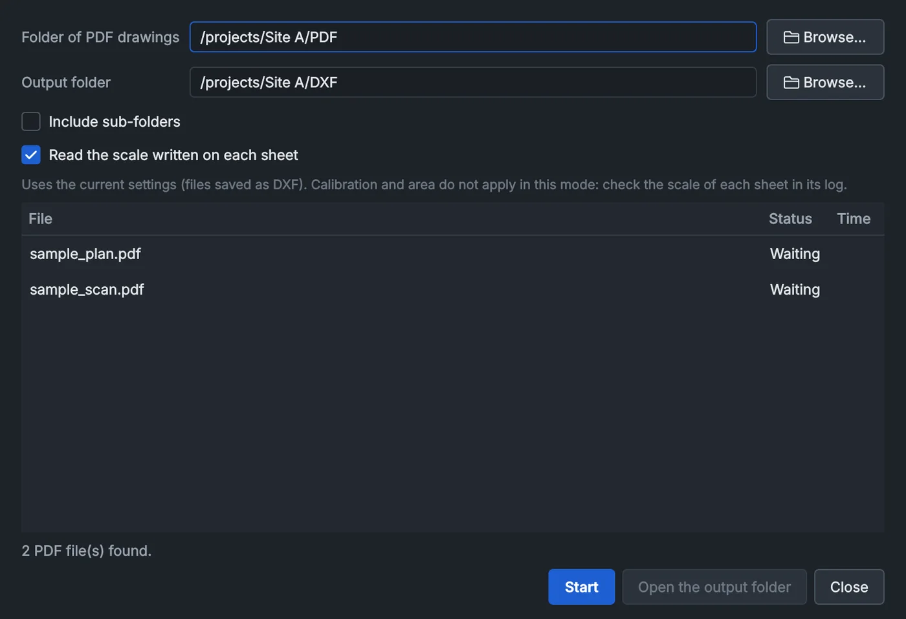

Real CAD, not exploded lines
True dimensions, blocks for repeated symbols, hatches, dashed linetypes and editable text, sorted into layers created from the colours and line weights of the PDF.
ConvertCAD rebuilds the lines, dimensions, hatches, blocks, layers and text of a 2D PDF plan as editable DXF and DWG, on your own computer.
Free and open source · Windows 10/11 and Linux


PDF DXFTrue dimensions, blocks for repeated symbols, hatches, dashed linetypes and editable text, sorted into layers created from the colours and line weights of the PDF.

Lines, circles and arcs of a scan are traced into vectors. Its text is read by the built-in PaddleOCR model, about 50 languages (English, French and other Latin-script languages, Chinese, Japanese). More OCR models, such as Arabic, Cyrillic or Greek, can be downloaded from the app when needed.

The scale is read from the title block or set on two points. Measure distances with object snaps, lay the PDF over the resulting DXF to compare them, and read the conversion report for more details.

Convert the whole PDF, one sheet of it or only the area you select. Save as DXF or DWG, in one file for all sheets or one per sheet.

English, French, Spanish, German or Arabic, in a dark or a light theme. Switch from the toolbar.

Convert every PDF of a folder from the window, or script it from the command line: ConvertCAD-cli plan.pdf -o plan.dwg

Every conversion runs locally: no account, no upload, no tracking. Client and NDA drawings never leave your machine. You remain responsible for converting only documents their owner allows.
The full code is public under the GNU AGPL. The portable version runs without installation or administrator rights.
The DWG converter and the text recognition come with the program.